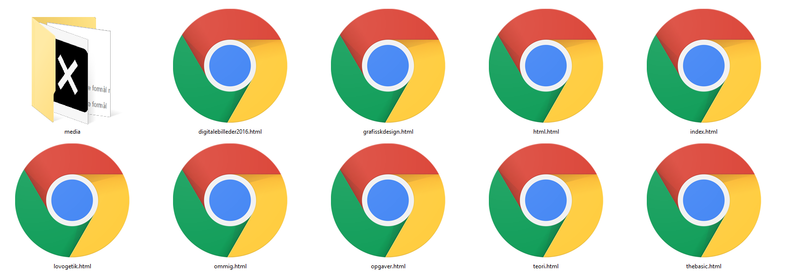

HTML står for HyperText Markup Language, som er et opmærkningssprig, der primært har af formål at fremstille hjemmesider. HTML er udviklet af World Wide Web Consortium. Det færdige produkt af denne del er udgivet den 7. december 2016. Formålet er at lære HTML og forstår grundlæggende kodning.
Formålet ved denne opgave er at få oprettet en webbaseret hjemmeside som vi kalder vores eget "Studieweb". På samme tid skal vi lære de grundlæggende HTML-kodning samt fejlsøgning i en kode og kunne håndtere det. Det sidste mål vi har i opgaver er at kunne brugt HTML til at dokumentere videre til fremadgående projektor. Det skal ikke glemmes at vi skal holde os under copyright og vide, hvad vi må bruge og ikke.
For at kode HTML skal man bruge en program editor, der findes mange forskellige, jeg startede med at bruge "Sublim Tekst 2" men fandt ud af at jeg var mere komfortabel med "Notepad++”.
For at starte godt vil jeg opstille start af en HTML kode og forklare, hvad man bruger de enkelte kode til. (Billede under fremgangsmåden for inspiration)
Der findes over 100 standart koder, som kan være svært at huske, men jeg har lavet en lille liste over de alle hyppigste "TAGS". Et lille fif til nye er at bruge www.w3schools.com til at have ved siden af en hele tiden under kodningen, den er nem lige at søge i med Ctrl+F i Chrome og Firefox.
Det er ikke svært at lave en hjemmeside, som fungere og giver information, men det der er svært er at få det til at se meget godt ud. Firmaer bruger tocifrede tusinde beløb på en hjemmeside, som "kun" viser et produkt. For at få et ok design med kun HTML, er man nød til at lave nogle forskel på overskrifterne, billeder, punkter/tal osv. CSS er et værktøj som kan hjælpe med at opbygge/designe din hjemmeside, som vil blive benyttet længere henne i Kom/It forløbet. Vi måtte ikke lave nogle former for udsmykning men kunne ikke lade være med at gøre nogle tags store, sætte nogle tat/punkter og lave overskrift størrelserne store og små
Fremgangsmåder er egentlig meget enkel, følg alle tingene på denne side og du kan "The Basic" omkring HTML!
Det kan godt være lidt svært at få alle sider, billeder og filer til at ligge de rigtige sted. Jeg plejer at gøre (I denne hjemmeside og i sandkassen) at lave 2 mapper 1 til selve hjemmesiden, hvor alle "undersiderne ligger i" og en til "media" altså billeder, filer og andet (Se billedet under).
Man bliver ALDRIG færdig med ens hjemmeside, du kan altid dokumentere videre, skrive noget teori eller skrive om en sjov oplevelse du har været ude for. Du skal alligevel opdatere den, hver 2 måneden for at holde den opdateret med den nyeste du har lavet og ændre det gamle, så det føltes, som om at du sider og arbejder på den hele tiden!
Jeg syntes at der har været et rigtig godt forløb med massere af læring, videoerne som Christian har laver på Rtgkom.dk er extremt gode til at komme i gang. Jeg kan dog ikke helt se hvorfor vi skal lave HTML og ikke WordPress, da det alle de professionelle bruger, har også brugt det selv, men give Christian ret i at det er en del "drag and drop". Jeg syntes ikke at min Gliffy tegning over opbygningen af hjemmesiden stemte over ens med, hvordan den er sluttet med at bliver (7. december 2016)